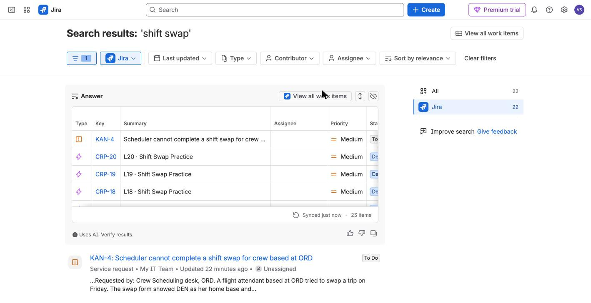

Module 6 of 8 · Session 2 · Connect Jira to code and Claude
Connect Claude through Atlassian MCP
Before you trust anything Claude tells you about Jira, prove three things: who it's acting as, which site it's reading, and which tools it's allowed to call.
40 min20 min practiceLab: Verify the client site and permissions
Objective
Verify an approved connection and explain how identity, site and tool permissions govern its use.
Model Context Protocol
Claude client
Atlassian server's Jira tools
Approved setup and authentication
Correct site selection
Read, search and write scopes
Rovo or Claude with MCP
Where this fits in the release reviewModule 7 asks Claude for a list of items and checks the query. Module 8 puts a Claude result into a release recommendation. Neither is worth anything if Claude was reading the wrong site, as the wrong person, or with tools you didn't know it had. This module is the pre-flight check for both.
M6.1 MCP in one picture: identity, site, tools
The Model Context Protocol (MCP) is an open standard that lets an AI client call tools on other systems. Atlassian runs a remote MCP server, the Atlassian Rovo MCP Server, that exposes Jira (and Confluence and other Atlassian products) as tools. Claude is the client: in Claude.ai, Claude Desktop or Claude Code, it decides which tool to call, and the server performs the call against your Atlassian site.
Every question about a Claude result reduces to three checks. Learn them as a pilot learns a callout:
IdentityWith OAuth sign-in, every tool call runs as you. Claude sees what your account can see and can change what your account can change. Nothing more, and nothing less.
SiteYour account may reach several Atlassian sites. A result is only evidence if it came from the training site, and the browse URL proves it.
ToolsThe server exposes read, search and write tools. Which ones Claude has depends on the server version, your organization's settings and the scopes you granted.
Tool names changeNames you may see include searchJiraIssuesUsingJql, getJiraIssue and createJiraIssue, but the set and the names vary by server version. Don't memorize them and don't trust a handout's list. Ask Claude: "List the Atlassian tools you have available right now."
M6.2 Connect with your organization's approved guide
The approved guide winsYour organization's approved MCP setup guide names the client you may use, the account you sign in with, the data rules and the escalation route. If it differs from anything on this page, follow the guide. The steps below show the general shape, so you know what to expect and can spot a wrong turn.
Option A · Claude.ai or Claude Desktop
Open Claude's settings and find Connectors.
Find Atlassian in the connector directory and choose Connect.
Sign in to Atlassian with your training account, choose the training site, and read the permissions screen (OAuth) before you approve it.
In a new chat, enable the Atlassian connector and ask Claude to list its Atlassian tools.
Option B · Claude Code (terminal or IDE)
claude mcp add --transport http atlassian https://mcp.atlassian.com/v2/mcp
/mcp
# choose "atlassian" → Authenticate → finish the Atlassian sign-in in your browser
claude mcp list
Endpoint and admin housekeeping
Use https://mcp.atlassian.com/v2/mcp for new setups. Older guides show /v1/mcp (still works) or /v1/sse, which stopped being supported after 30 June 2026. If an old configuration uses /v1/sse, remove it and add the v2 endpoint.
Your organization must allow the Atlassian Rovo MCP Server and the client you use. If the connector isn't offered at all, that's an approval question, not a setting you change.
API-token authentication (for headless or CI use) must be turned on by an org admin. With a token, the server only exposes tools that match the token's scopes, so "missing" Jira tools usually mean a scope problem.
Pick the site deliberately. If your account belongs to more than one Atlassian site, the sign-in asks which to authorize. Choosing your day-job site instead of the training site is the most common reason Claude "can't find" CRW-25.
Pre-flight (saved in this browser)
M6.3 Tools and the permission boundary
What Claude can do through MCP is the overlap of three gates. A call succeeds only if all three allow it. That's why "Claude can do it" is never a reason to give someone more access: the gates are what keep it safe.
Gate
Who controls it
What it decides
How it fails
1. Organization approval
Org admin and your AI or MCP owner
Whether this client and the Atlassian MCP server may connect at all, and which authentication methods are allowed
No connector offered, or sign-in blocked
2. Authentication scopes
You approve them at sign-in; token scopes are set when a token is issued
Which tools the server exposes to this connection: read, search, write
A tool is missing from the list
3. Your Jira permissions
Jira and space admins
What your account may see and change in each space: Browse, Create, Edit, Transition, Add comments, Link
"Does not exist or you do not have permission", or a permission error on a write
In this course the third gate does real work. Learners can browse CRW but not change it, and can create, edit, transition, link and comment only in their CRP seat. So when Claude reads CRW-25 ↗, the read is supported by a get or search tool (gate 2) and your Browse permission on CRW (gate 3). If Claude tried to comment on CRW-25 for you, gate 3 would refuse it. That refusal is the boundary working, not a fault to escalate.
"Not found" and "no permission" look the same, on purposeJira answers a request for an item you can't browse the same way it answers one for an item that doesn't exist: "does not exist or you do not have permission to see it". So when Claude says CRW-25 doesn't exist, test it yourself: open the link in your browser as yourself. If you can see it, Claude is on another site or account. If you can't, it's your Jira access, and the route is an access request, never someone else's account or token.
Try it: classify your tool inventory
Paste the tool list Claude gives you (one per line, or Claude's whole answer). The classifier sorts each tool into read or write, shows the Jira permission it relies on, and tells you whether your connection can change Jira. If you're not connected yet, load the example list: it's a sample, and your server may differ.
Tool inventory
Which gate is it?
Each card is something learners reported in a pilot. Pick the gate (or the site) responsible.
Claude Desktop doesn't offer an Atlassian connector at all, although a colleague in another organization has one.
The connector or the MCP server isn't allowed for your organization or client. Route it to the owner named in your guide.
Claude answers questions about another space you work in every day, but says CRW-25 "does not exist". You can open CRW-25 in your browser.
You can see it, so your permission is fine. Claude is reading the site you authorized at sign-in, which isn't the training site. Reconnect and choose it.
On an API-token connection, Claude lists search and get tools but no create or comment tools.
With a token, the server only exposes tools that match the token's scopes. Ask the token's issuer; don't mint a broader token yourself.
Claude reads CRW-25 perfectly, then gets a permission error when asked to add a comment to it.
Learners are read-only in CRW. The write tool exists; your account isn't allowed to comment there. Working as designed.
You and your partner run the same JQL through Claude on the training site and get different counts.
Results only include what each connected account can browse. Different access, different count. Module 7 comes back to this.
M6.4 Rovo or Claude with MCP?
Both are live options in your toolkit. Rovo is on the training site today: Rovo Search, Ask AI in search, and Improve actions on work items. Claude with MCP runs in an approved external client. Pick by where the work happens and what else it needs, not by habit.
Rovo
Claude with Atlassian MCP
Where it runs
Inside Jira and other Atlassian apps
In the approved external client: Claude.ai, Desktop or Code
Identity
You, with your Atlassian permissions
You, through OAuth (or a scoped token)
Best for
Searching and asking about Atlassian content in place: natural language to JQL, AI answers in search, improving a description, summarizing an item or comments, your organization's approved agents
Work that also lives outside Atlassian: Jira context while coding in Claude Code, combining Jira results with material you're allowed to share in the client, multi-step analysis you'll check
Watch out for
Crowded results on a busy site; AI can't invent missing facts
Writes from outside Jira; wrong site; data leaving Atlassian under your AI data policy
Verify by
Running the JQL and opening the items
Running the JQL in Jira, opening the browse URL, comparing counts
…atlassian.net/jira/search?text=shift swap

Rovo Search for "shift swap" on the training site. Notice what crowds the answer: KAN-4 first, then twenty practice epics (CRP-20, CRP-19, CRP-18…) from the lab seats. The tool is right about what exists; the scope is wrong for a CRW question. Claude would face the same crowd. Scope your question to a space or a key.
…atlassian.net/issues/?jql=…
Rovo's Ask AI, live on the training site: plain words in, JQL out, results in place. Right answer here (CRW-34 and CRW-33, 2 of 2), but notice the raw field ids cf[10020] (Sprint) and cf[10036] (Story Points) and no project clause. Module 7 checks a Claude-generated query with the same rigor.
Which tool suits each task best?
You're in Jira search and want "stories and bugs in SWP-2026.q4.5 missing estimates" as JQL you can run right there.
Ask AI does this in place and runs the query immediately. You still read the JQL it wrote.
You're coding the trip-board submit handler in your IDE and want CRW-25's acceptance criteria and blocker without switching windows.
Claude Code with the Atlassian server sits next to the code. Read-only, and branch names carry the key (Module 5).
Your seat's vague request needs a cleaner description before refinement.
"Improve description" works on the item in place. Remember: it restructures, it can't invent missing acceptance criteria.
You need the official completed points for SWP-2026.q4.2 for the release pack.
Historical velocity comes from the native Velocity report (18 completed), not from a current-state query by any assistant. Module 7 shows why.
In an approved client, you want to compare a JQL result with a test log you're allowed to share there, and draft a summary you'll check line by line.
The work combines Jira with material outside Atlassian, in the client your organization approved. Your AI data policy still applies to what you paste.
Instructor demo · 10 min
Follow the guide on screen. Open your organization's approved MCP setup guide next to Claude. Connect (or show the existing connection) and point at the site picker and the permissions screen during sign-in.
Inspect the tools. Ask: "List the Atlassian tools you have available right now, grouped by read and write." Paste the answer into the inventory classifier. Say what the write tools mean: this connection can change Jira as me.
Retrieve a known item. Ask for CRW-25 with the site URL in the prompt (the retrieval prompt in the lab). Open the browse link Claude returns side by side with the answer. Check status Development, 5 points, Swap Squad, SWP-2026.q4.4, flagged, blocked by CRW-46.
Show an access-denied result without fixing it. With a learner-role test account, ask Claude for an item in a space that account can't browse. Read the "does not exist or you do not have permission" message aloud. Open the same link in the browser as that account: same result. Conclude "Jira permission", name the route, and don't grant access on the spot.
Show the boundary on a write. Ask Claude, without calling anything, which tool and Jira permission a comment on CRW-25 would need, and whether a learner account has it in CRW. The answer should be: comment tool, Add comments permission, no.
LAB M6 · 20 MIN · CRW READ-ONLY · YOUR SEAT
Verify the client site and permissions
Turbulence
Brief Before the release review accepts any Claude result, the delivery lead wants proof that your connection reads the training site, as you, with known tools. CRW is read-only: Claude may search and read it, but nothing is written there. The only write this lab allows, and only if your instructor designates it, is one comment on your seat epic CRP-(your seat number) in the CRP practice space (seat label lab-{SEAT}, summary prefix L{SEAT} · ). If your connection isn't approved yet, pair with someone whose is and record what you observed.
Training site URL for your prompts:…
Complete or verify the connection (7 min).
Follow your organization's approved MCP setup guide (shape in M6.2). Tick the pre-flight list.
In a new chat with the Atlassian connector enabled, ask which sites Claude can reach:
Which Atlassian sites can you access with this connection? List each site's name and URL. Don't call any tool that changes anything.
Confirm the training site URL above is in the list. If it isn't, stop and use the access diagnosis.
Ask for the tool inventory and paste the answer into the classifier:
List the Atlassian tools you have available right now, grouped into read and write.
Retrieve a known item and check it (7 min).
Paste the site URL into this prompt and run it:
Read-only. On the Atlassian site <paste the training site URL>, get work item CRW-25 and return: key, summary, status, story points, team, sprint, fix version, priority, whether it is flagged, its blocking links, and the browse URL people open in a browser. Then tell me which tool you called.
Open the browse URL Claude gave you. Don't use the link on this page for this check: the point is to test Claude's link. Compare it field by field with the item.
Paste Claude's whole answer into the retrieval verifier below and resolve every ✗ or !.
Explain the permission boundary (6 min).
Ask, without letting Claude call anything:
Don't call any tools for this. Which of your tools would you need to add a comment to CRW-25, and which Jira permission does that need? Given that my account is read-only in the CRW space, what would happen?
Write down which tool and which permission supported your read, and what stops a write to CRW. Run the access diagnosis for "a write fails" so you can name the route for a genuine missing-access request.
Only if your instructor designates it: ask Claude to plan one comment on your seat epic CRP-(your seat number) ("L{SEAT} · MCP verified: CRW-25 retrieved from the training site"), show you the plan, and write only after you reply "cleared". Then confirm it with the JQL below.
key = CRW-25
project = CRP AND issuetype = Epic AND summary ~ "L{SEAT}" AND updated >= -1h
project = CRW AND updated >= -1h ORDER BY updated DESC
Retrieval verifier
Checks Claude's answer against CRW-25 as it stands on the training site, and checks that its link points at the site configured in this page's footer.
Access diagnosis: something didn't work
Debrief: what a strong answer looks like
Retrieval. CRW-25 "Submit a swap request from the trip board": status Development, 5 story points, Team Swap Squad, sprint SWP-2026.q4.4, fix version Crew App 4.2, priority High, flagged, is blocked by CRW-46 "Rules vendor sandbox credentials not issued", parent CRW-3. Claude may show the Team as an id (7ab46d0b-…) rather than the name; that's the same team.
Source. The browse URL is the training site's address followed by /browse/CRW-25, and opening it shows the same facts. A link to a different host means Claude read a different site, however plausible the answer. An API address (/rest/api/…) isn't a link a reviewer can open: ask for the browse URL.
Tool and permission. A get-work-item tool (for example getJiraIssue) or a JQL search tool with key = CRW-25. It worked because (1) your organization allows the client and server, (2) the scopes you granted include reading Jira, and (3) your account has Browse permission on CRW. Claude didn't get any access you don't have.
Boundary. A comment on CRW-25 would need a comment tool and the Add comments permission in CRW. Learner accounts are read-only in CRW, so Jira refuses it. That's the boundary holding, and nobody should "fix" it. If you genuinely lack access you need (say, you can't browse CRW at all), route the request through the owner your guide names, with the item key, the exact message and the tool name. Never use another person's account or token, and never ask Claude to work around a refusal.
When to use which. Rovo for in-place Jira questions on the training site; Claude with MCP when the work is in the approved external client, such as Claude Code next to the repository from Module 5.
Learner output · Module 6
A verified item retrieval, source link and an explained permission boundary.
+400 mi
Checkpoint
1. Claude says CRW-25 "does not exist or you do not have permission". You open the CRW-25 link in your browser and see it. What's the most likely cause?
You can see it, so your permission is fine. Claude acts as the account and site you authorized; check which sites it can reach and reconnect to the training site.
2. What decides what Claude can do in Jira through the Atlassian MCP server?
Each call must pass all three gates. That's why Claude can never see or change more than you can.
3. Claude reads CRW-25 fine, but a comment on CRW-25 fails with a permission error. What should you do?
The refusal is the design. Expanding access to make an assistant's write succeed is exactly the wrong direction.
4. Which check best proves a Claude retrieval came from the training site?
A claim about the source isn't evidence of the source. The link and a field-by-field comparison are.
5. A handout lists a tool named getJiraIssue; Claude's inventory today shows a differently named get tool. What do you trust?
The inventory is how you learn what the connection can actually do, including whether it can write. Re-check it after any reconnect.
![Jira Ask AI turning the request stories and bugs in sprint SWP-2026.q4.5 that are missing story point estimates into the JQL issuetype IN (Story, Bug) AND cf[10020] = SWP-2026.q4.5 AND cf[10036] IS EMPTY ORDER BY created DESC, returning CRW-34 and CRW-33, 2 of 2](assets/img/rovo-ask-ai-jql.jpg)